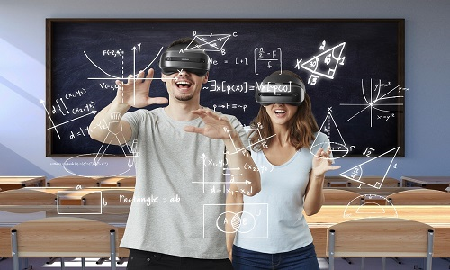
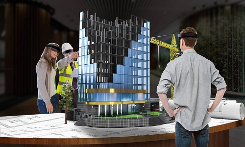
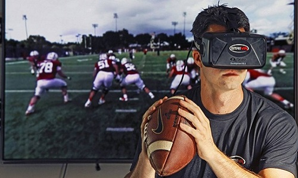

VR дозволяє лікарям та медичному персоналу виконувати вправи та тренування у віртуальному середовищі. Це дозволяє практикувати хірургічні процедури, вивчати анатомію та покращувати навички без ризику для пацієнтів. Крім того, VR використовується для психотерапії, реабілітації пацієнтів та відновлення моторики.
У сфері освіти VR надає можливість створення інтерактивних навчальних курсів та симуляцій. Це допомагає учням краще засвоювати матеріал, відчувати практичний досвід та ефективно навчатися у віртуальних лабораторіях та середовищах.
Одним з найпопулярніших застосувань VR є геймінг. VR-ігри дозволяють користувачам погрузитися у захоплюючі іммерсивні світи та взаємодіяти з ними за допомогою віртуального обладнання, такого як шоломи та контролери. Крім того, VR використовується у віртуальних парках розваг та інтерактивних атракціонах.




У сфері архітектури та дизайну VR дозволяє архітекторам, дизайнерам та клієнтам відчувати простір та об'єм проекту ще до його фізичної реалізації. Це допомагає виявляти та виправляти помилки, ефективно працювати над дизайном та покращувати співпрацю між всіма сторонами проекту.
VR використовується для віртуальних турів, що дозволяє користувачам відвідувати віддалені місця та пам'ятки світу без фізичного присутності. Це розширює можливості туризму та дозволяє зберегти та ділитися культурною спадщиною.
VR використовується у спорті для тренування спортсменів, вивчення та аналізу технік гри, а також для створення іммерсивних спортивних вражень для глядачів.
Відео надано tiktok.com/@danvork777.